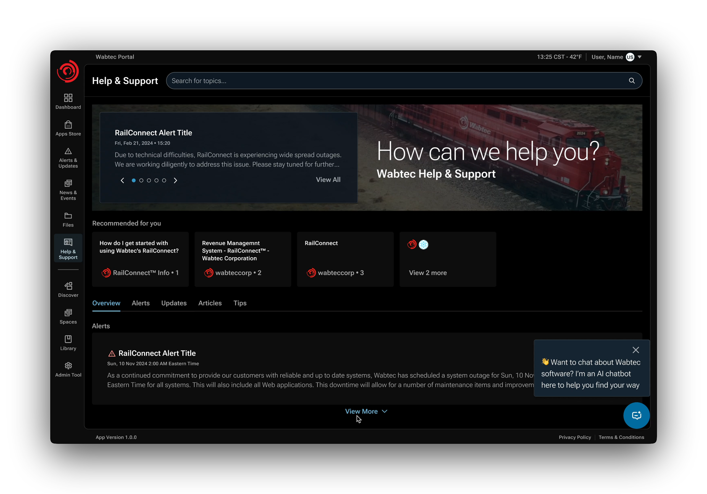
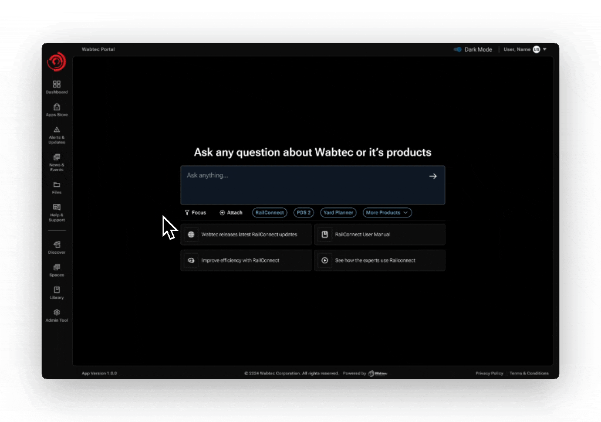

Wabtec One Portal: AI Integration

Context
As Staff UX Designer, I led the UX strategy and product design for the AI-powered Help & Support experience within Wabtec One Portal. I partnered closely with product managers, engineers, support leadership, and researchers to define the product vision, design interaction patterns, and deliver implementation-ready solutions.
Separately, I also contributed to the evolution of Wabtec's Volt 2 Design System—a scalable design foundation supporting both light and dark themes across the broader product ecosystem. The AI experience leveraged and extended this system to ensure consistency, accessibility, and long-term scalability.
The Problem
Wabtec's customer support process relied heavily on email. Users had limited self-service capabilities and struggled to locate relevant documentation, troubleshooting guides, or product-specific resources. Support agents manually translated emails into Salesforce tickets, creating operational inefficiencies and slower response times.
The opportunity was not simply to introduce AI—but to create an intelligent support ecosystem that helped users find answers faster, resolve issues independently, and seamlessly connect with human support when needed.
The Strategy
Three design principles guided the experience:
Design for trust, not just answers
Enterprise users make operational decisions based on the information presented to them. AI responses needed to be transparent, explainable, and verifiable.
Self-service before escalation
Users should be empowered to solve problems independently, while preserving a seamless path to human support when necessary.
Reduce cognitive load through context
Support experiences should surface the most relevant information based on a user's products, permissions, and workflow rather than overwhelming users with every possible result.
Key Design Decisions
AI Search with Source Transparency
Rather than presenting AI responses as authoritative black boxes, I designed the experience around trust and verification.
Specifically, I used citation badges, source cards, and expandable drawers with links to references to allow users to understand where information originated and validate responses against original documentation before taking action.
Intelligent Prompt Suggestions
Conversational interfaces can often suffer from a "blank canvas" problem where users don't know what to ask.
I designed suggested prompts to reduce friction, expose system capabilities, and guide users toward common troubleshooting paths. I believed this would improve adoption and increase successful self-service outcomes.
Context-Aware Support
Since the system has access to users' accounts' metadata, product access, and permissions, I wanted to surface information most relevant to each user's environment.
I chose this approach to reduce information overload and shorten the path from question to resolution.
Seamless Escalation to Human Support
AI assistance was intentionally designed as part of a broader support ecosystem—not a replacement for human expertise.
Since the inititive required full self-service case creation features, I wanted users to be able to transition naturally from AI assistance to case creation and live support while preserving conversation history and contextual information. This would reduce repetition and improve continuity throughout the support journey.
I did this by progressively displaying additional options as users scroll past generated responses and sources, displaying a case creation CTA as a final option.
Centralizing the Support Experience
Prior to this initiative, support resources were distributed across multiple locations, making it difficult for users to determine where to go when issues arose. Documentation, support requests, troubleshooting resources, and product-specific guidance existed across disconnected systems and workflows.
Design Rationale
A key goal was reducing navigation friction and decision fatigue.
When users encounter a problem, they should not have to determine which support channel is appropriate before receiving help. Instead, the experience guides users toward the most effective path to resolution based on their needs and context.
By creating a single entry point into the support ecosystem, users can move more efficiently between self-service resources and human assistance while maintaining continuity throughout the support journey.

Help and Support Landing Page: A centralized hub providing access to knowledge bases, user manuals, and support resources tailored to the user's specific products
Expected Impact
- Reduced time spent locating support resources
- Increased discoverability of self-service options
- Improved adoption of AI-powered support experiences
- Reduced dependency on email-based support channels
Context Specific Questions & Responses
During discovery, I learned that users were frequently overwhelmed by the volume of documentation available across Wabtec's software ecosystem.
Rather than presenting every available result, the AI search experience leverages user permissions, product access, and contextual metadata to prioritize information that is most relevant to the user's environment.
This reduces information overload, shortens the path to resolution, and increases confidence that surfaced content applies to the user's specific situation.

AI-Powered Global Search: Enabled users to locate troubleshooting information, by surfacing context specific content based on the users’ access
Intelligent Prompt Suggestions
Conversational interfaces often create a "blank canvas" problem where users are unsure what questions the system can answer.
Suggested prompts reduce the effort required to get started while simultaneously teaching users the capabilities of the system. By surfacing common support tasks and troubleshooting paths directly within the interface, the experience becomes more approachable and increases the likelihood of successful self-service resolution.

AI-Driven Support Chatbot: Offered real-time assistance, guiding users through common issues and directing them to appropriate resources or support channels
Building Trust Through Transparency
One of the biggest challenges in enterprise AI experiences is trust.
Unlike consumer search experiences, enterprise users often rely on information to make operational decisions that impact business outcomes. Presenting an answer without context can create uncertainty and reduce confidence in the system.
Design Rationale
During discovery, it became clear that users needed more than AI-generated answers—they needed confidence that answers could be verified.
To address this, I intentionally designed the response experience around transparency rather than outputs alone.
AI-generated responses include citation badges, source cards, and expandable references that allow users to quickly verify where information originated and access supporting documentation directly.
This design approach helps users understand not only what the answer is, but why the system arrived at that answer.
Why This Matters
Trust is one of the primary barriers to AI adoption. Providing source transparency enables users to validate information independently, reduces perceived risk, and increases confidence when acting on AI-generated recommendations.

AI-Generated Responses with Source Transparency: Delivers contextual answers enhanced with citation badges that reveal source details on hover, alongside source cards and an expandable drawer with linked references to original content.
Expected Impact
- Increased trust in AI-generated responses
- Greater adoption of AI-powered support workflows
- Reduced verification effort
- Faster decision-making
Live Agent Escalation and Case Management
Designing a Seamless Escalation Path
A core principle of the project was:
Self-service first. Human expertise when necessary.
While AI-powered search and chatbot experiences can successfully resolve many support requests, certain situations still require direct interaction with support specialists.
The challenge was ensuring users could transition from self-service support to human assistance without abandoning their workflow or losing context.
Design Rationale
Historically, users escalated issues through email, forcing support agents to manually interpret requests, gather additional context, and recreate information within Salesforce.
The new experience was designed to preserve context across the entire support journey.
Users can move from AI-powered search to case creation and live agent support while maintaining access to conversation history, documentation references, search results, and previously gathered information.
This reduces redundant communication and allows support teams to begin problem-solving immediately rather than reconstructing context.

AI-Generated Responses with Source Transparency: Delivers contextual answers enhanced with citation badges that reveal source details on hover, alongside source cards and an expandable drawer with linked references to original content.
Systems Thinking
Rather than treating AI support and human support as separate experiences, the design intentionally connects them into a single workflow. This approach creates continuity for users while improving operational efficiency for support teams.
Expected Impact
- Reduced support resolution times
- Reduced duplicate communication
- Improved case quality
- Increased customer satisfaction
- Better operational efficiency for support teams
Design System
This project was built using the Volt 2 Design System, which I helped evolve to support modern enterprise experiences, including AI-specific interaction patterns.
Volt 2 introduced reusable components, design tokens, and support for both light and dark modes, allowing experiences to remain consistent, accessible, and scalable across Wabtec's expanding suite of applications.

Outcomes
Ultimately the designed experience led to an:
- Increased adoption of self-service support
- Reduced dependency on email-based workflows
- Improved discoverability of support information
- Increased trust in AI-generated responses
- Established scalable foundation for future AI capabilities across the platform
This project reinforced that successful enterprise AI experiences are less about generating answers and more about designing trust, clarity, and actionable workflows that help users move confidently from information to action.

{kind=link}
{kind=link}
{kind=link}
{kind=link}
{kind=link}
Light Mode Mockups